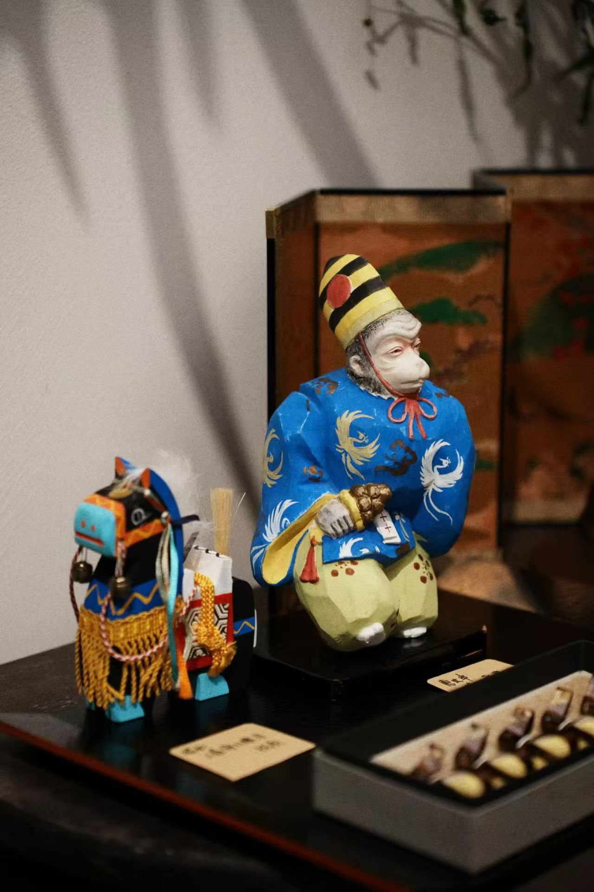

028C协同
布里斯湾和028C青年创意社区的关系，是这个商业模式最独特的壁垒。它不是"园区里的一个店"，而是"内容引擎的商业变现模块"。
① 内容引擎：骑行派社群、鲸鱼赫兹播客、快闪活动策划 ② 流量池：2万+私域社群（企微+小红书） ③ 品牌背书：028C是成都青年文化的标杆IP ④ 低成本试错：自有物业+内容团队免费支撑
① 商业变现：把028C的社群流量转化为实际消费 ② 园区调性提升：布里斯湾的风物选物提升了整个园区的品牌质感 ③ 内容素材：店铺本身就是028C内容的拍摄/录制场景 ④ 验证模型：为028C探索"内容→商业"的转化路径
不是绑定关系——布里斯湾/袅袅香铺可以独立开店。但028C提供的内容能力和社群资产，是其他独立选物店无法复制的壁垒。第二店最大的挑战就是"没有028C在旁边"。
核心判断：028C×布里斯湾的协同结构，在成都可能是唯一的。别人可以抄选品、抄装修，但抄不走028C积累的社群关系和内容生产能力。
75